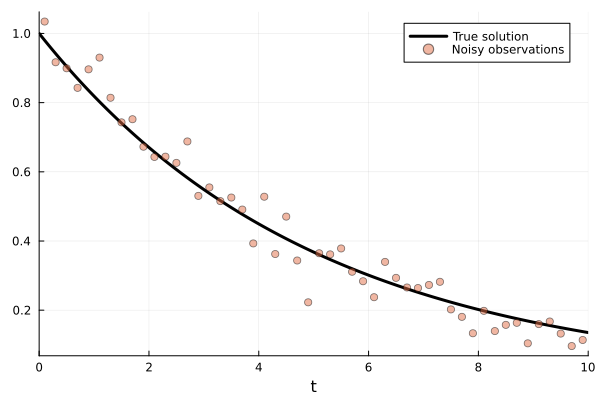
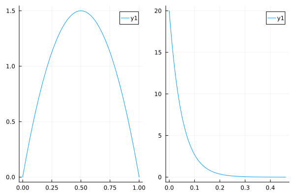
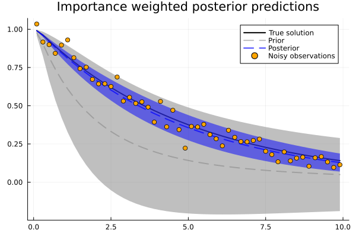
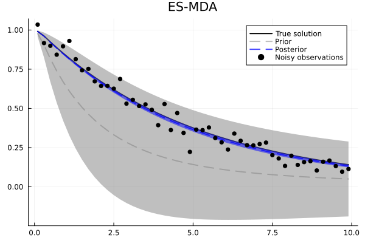
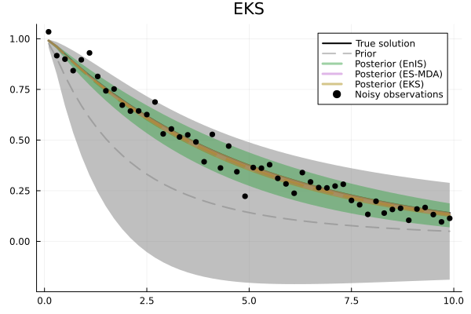

Getting started: Linear ODE inversion
In this example, we will use SimulationBasedInference in combination with the OrdinaryDiffEq package to recover the true parameter of a simple linear ordinary differential equation:
\[\frac{\partial u}{\partial t} = -\alpha u\]
Of course, this ODE has an analytical solution: $u(t) = u_0 e^{-\alpha t}$ which we could (more efficiently) use to define the inverse problem. However, in order to demonstrate the usage of SimulationBasedInference on dynamical systems more broadly, we will solve the problem using numerical methods.
First, we load the necessary packages
using SimulationBasedInference
using OrdinaryDiffEq
using Plots, StatsPlots
import Random
and then initialize a random number generator for reproducibility.
const rng = Random.MersenneTwister(1234);Now, we will define our simple dynamical system using the general SciML problem interface:
ode_func(u,p,t) = -p[1]*u;
α_true = 0.2
ode_p = [α_true];
tspan = (0.0,10.0);
odeprob = ODEProblem(ode_func, [1.0], tspan, ode_p)ODEProblem with uType Vector{Float64} and tType Float64. In-place: false
timespan: (0.0, 10.0)
u0: 1-element Vector{Float64}:
1.0To solve an inverse (or inference) problem with SimulationBasedInference, we must first define a forward problem. The forward problem consists of two components:
- A SciML problem type or forward map function $f: \Theta \mapsto \mathcal{U}$.
- One or more "observables" which define the observation operator that transforms the model state to
to something comparable to data.
In this case, we can simply define a function that extracts the current state from the ODE integrator. The SimulatorObservable(name, func, t0, tsave, coords) additionally takes an initial time point, a vector of observed time points, and a tuple specifying the shape or coordiantes of the observable at each time point. Here, (1,) indicates that the state is a one-dimensional vector.
tsave = tspan[1]+0.1:0.2:tspan[end];
n_obs = length(tsave);
observable = SimulatorObservable(:y, integrator -> integrator.u, tspan[1], tsave, (1,), samplerate=0.01);
forward_prob = SimulatorForwardProblem(odeprob, observable)SimulatorForwardProblem (ODEProblem) with 1 observables (:y,)
In order to set up our synthetic example, we need to some data to infer from. Here we generate the data by running the forward model and adding Gaussian noise.
ode_solver = Tsit5()
forward_sol = solve(forward_prob, ode_solver, saveat=0.01);
true_obs = get_observable(forward_sol, :y)
noise_scale = 0.05
noisy_obs = true_obs .+ noise_scale*randn(rng, n_obs);plot the results
plot(forward_sol.sol, label="True solution", linewidth=3, color=:black)
plt = scatter!(tsave, noisy_obs, label="Noisy observations", alpha=0.5)
Here we set our priors. We use a weakly informative Beta(2,2) prior which puts less mass at the tails. We could also use a flat prior Beta(1,1) if we wanted to be more agnostic to further minimize the influence of the prior.
model_prior = prior(α=Beta(2,2));
noise_scale_prior = prior(σ=Exponential(noise_scale));
p1 = Plots.plot(model_prior.dist.α)
p2 = Plots.plot(noise_scale_prior.dist.σ)
plt = Plots.plot(p1, p2)
Now we assign a simple Gaussian likelihood for the obsevation/noise model.
lik = SimulatorLikelihood(IsoNormal, observable, noisy_obs, noise_scale_prior);We now have all of the ingredients needed to set up and solve the inference problem. We will start with a simple ensemble importance sampling inference algorithm.
inference_prob = SimulatorInferenceProblem(forward_prob, ode_solver, model_prior, lik);
enis_sol = solve(inference_prob, EnIS(), ensemble_size=128, rng=rng);We can extract the prior ensemble from the solution.
prior_ens = get_transformed_ensemble(enis_sol)
prior_ens_mean = mean(prior_ens, dims=2)[:,1]
prior_ens_std = std(prior_ens, dims=2)[:,1]
prior_ens_obs = get_observables(enis_sol).y;
prior_ens_obs_mean = mean(prior_ens_obs, dims=2)[:,1]
prior_ens_obs_std = std(prior_ens_obs, dims=2)In contrast to other inference algorithms, importance sampling produces weights rather than direct samples from the posterior. We can use the get_weights method to extract these from the solution.
importance_weights = get_weights(enis_sol);We can then use these importance weights to compute weighted statistics using standard methods from the Statistics and StatsBase modules. Note that these modules are exported by SimulationBasedInference for convenience.
posterior_obs_mean_enis = mean(prior_ens_obs, weights(importance_weights), 2)[:,1]
posterior_obs_std_enis = std(prior_ens_obs, weights(importance_weights), 2)[:,1]
posterior_mean_enis = mean(prior_ens, weights(importance_weights))0.21222358138901481Now we plot the prior vs. the posterior predictions.
plot(tsave, true_obs, label="True solution", c=:black, linewidth=2, title="Importance weighted posterior predictions")
plot!(tsave, prior_ens_obs_mean, label="Prior", c=:gray, linestyle=:dash, ribbon=2*prior_ens_obs_std, alpha=0.5, linewidth=2)
plot!(tsave, posterior_obs_mean_enis, label="Posterior", c=:blue, linestyle=:dash, ribbon=2*posterior_obs_std_enis, alpha=0.7, linewidth=2)
plt = scatter!(tsave, noisy_obs, label="Noisy observations", c=:orange)
One of the key benefits of the standard problem interface is that we can very easily switch to a different algorithm by changing a single line of code. Here, we solve the same inference problem instead with the ensemble smoother w/ "multiple data assimilation" (ES-MDA).
esmda_sol = solve(inference_prob, ESMDA(), ensemble_size=128, rng=rng);Now we extract the posterior ensemble and compute the relevant statistics.
posterior_esmda = get_transformed_ensemble(esmda_sol)
posterior_mean_esmda = mean(posterior_esmda, dims=2)1×1 Matrix{Float64}:
0.20597582729899466Plotting the predictions shows that we get a much tighter estimate of the posterior mean.
posterior_obs_esmda = get_observables(esmda_sol).y
posterior_obs_mean_esmda = mean(posterior_obs_esmda, dims=2)[:,1]
posterior_obs_std_esmda = std(posterior_obs_esmda, dims=2)[:,1]
plot(tsave, true_obs, label="True solution", c=:black, linewidth=2, title="ES-MDA")
plot!(tsave, prior_ens_obs_mean, label="Prior", c=:gray, linestyle=:dash, ribbon=2*prior_ens_obs_std, alpha=0.5, linewidth=2)
plot!(tsave, posterior_obs_mean_esmda, label="Posterior", c=:blue, linestyle=:dash, ribbon=2*posterior_obs_std_esmda, alpha=0.7, linewidth=2)
plt = scatter!(tsave, noisy_obs, label="Noisy observations", c=:black)
We can again solve the same problem with the Ensemble Kalman Sampler of Garbuno-Inigo et al. (2020) which yields very similar results (in this case).
eks_sol = solve(inference_prob, EKS(), ensemble_size=128, rng=rng, verbose=false)
posterior_eks = get_transformed_ensemble(eks_sol)
posterior_mean_eks = mean(posterior_eks, dims=2)
posterior_obs_eks = get_observables(eks_sol).y
posterior_obs_mean_eks = mean(posterior_obs_eks, dims=2)[:,1]
posterior_obs_std_eks = std(posterior_obs_eks, dims=2)[:,1]
plot(tsave, true_obs, label="True solution", c=:black, linewidth=2, title="EKS")
plot!(tsave, prior_ens_obs_mean, label="Prior", c=:gray, linestyle=:dash, ribbon=2*prior_ens_obs_std, alpha=0.5, linewidth=2)
plot!(tsave, posterior_obs_mean_eks, label="Posterior", c=:blue, linestyle=:dash, ribbon=2*posterior_obs_std_eks, alpha=0.7, linewidth=2)
plt = scatter!(tsave, noisy_obs, label="Noisy observations", c=:black)Finally, we can plot the posterior predictions of all of the algorithms and compare.
plot(tsave, true_obs, label="True solution", c=:black, linewidth=2, title="EKS")
plot!(tsave, prior_ens_obs_mean, label="Prior", c=:gray, linestyle=:dash, ribbon=2*prior_ens_obs_std, alpha=0.5, linewidth=2)
plot!(tsave, posterior_obs_mean_enis, label="Posterior (EnIS)", linestyle=:dash, ribbon=2*posterior_obs_std_enis, alpha=0.5, linewidth=3)
plot!(tsave, posterior_obs_mean_esmda, label="Posterior (ES-MDA)", linestyle=:dash, ribbon=2*posterior_obs_std_esmda, alpha=0.5, linewidth=3)
plot!(tsave, posterior_obs_mean_eks, dims=2, label="Posterior (EKS)", linestyle=:dash, ribbon=2*posterior_obs_std_eks, alpha=0.5, linewidth=3)
plt = scatter!(tsave, noisy_obs, label="Noisy observations", c=:black)
This page was generated using Literate.jl.